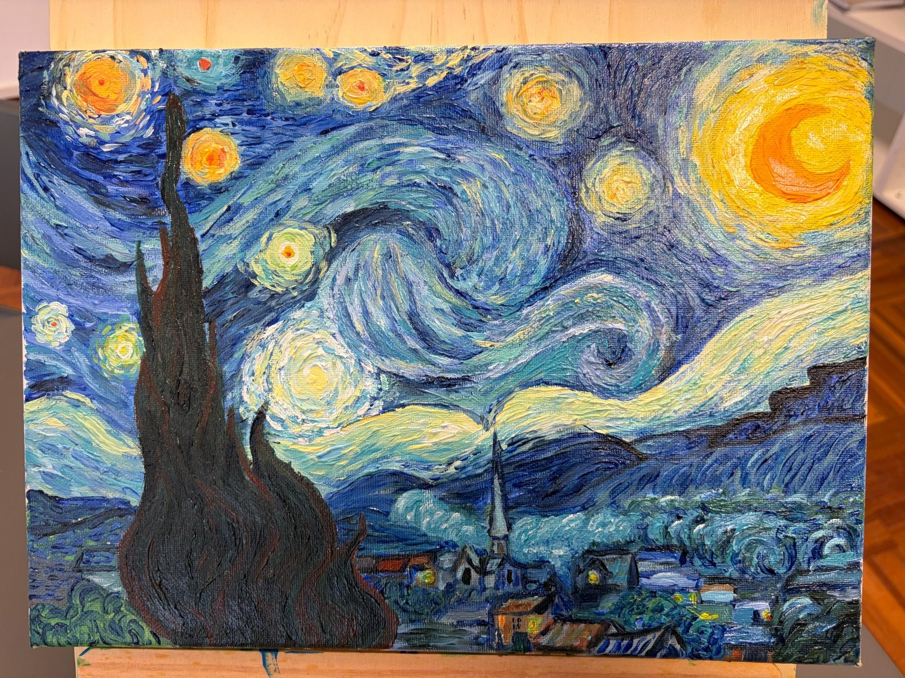
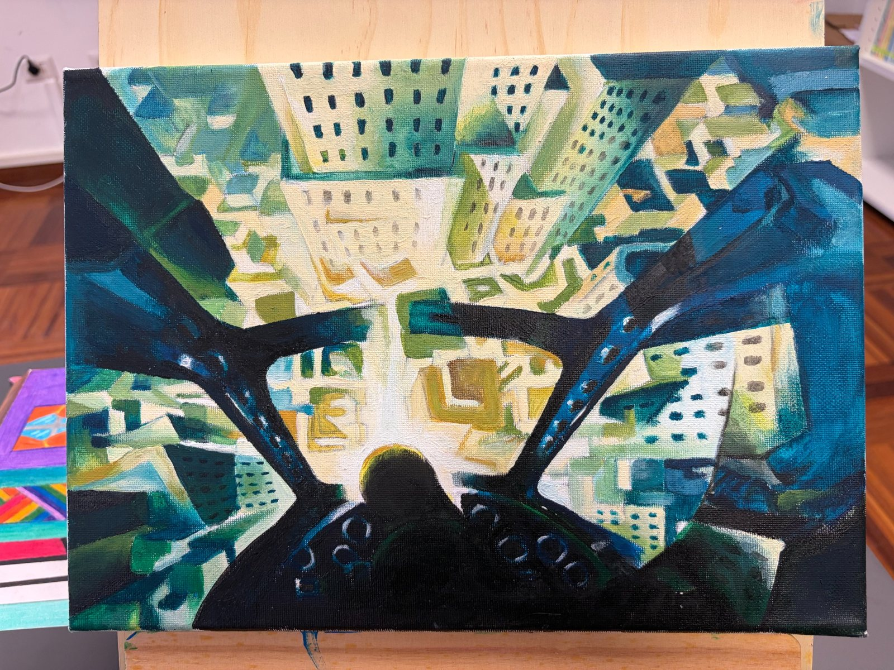
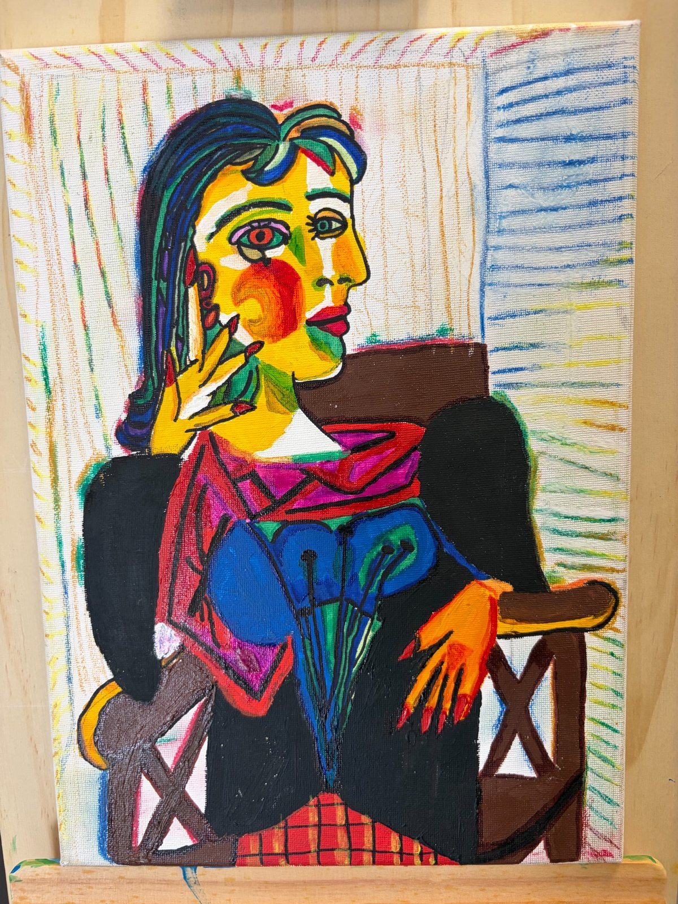

Imparare l’arte,
creare bellezza.
Risorse, progetti e strumenti per esplorare l’arte in modo creativo, consapevole e personale.
Scopri il sito →Esplora
Artisti, correnti e opere.
Esplora →Laboratori
Progetti e attività per la classe.
Laboratori →Strumenti
App, tour e risorse digitali.
Strumenti →Mappe
Sintesi, mappe e risorse.
Mappe →Archivio
Lavori raccolti negli anni.
Archivio →Area studenti
Consegne, tutorial e materiali.
Area studenti →Nuove pubblicazioni
Ultimi lavori pubblicati

Passa il mouse per vedere i lavori Classe 3E • Esame 2026 Lavori su tela Apri la raccolta →
Passa il mouse per vedere i lavori Classe 3C • Esame 2026 Lavori su tela Apri la raccolta → Passa il mouse per vedere i lavori
Classe 3B • Esame 2026
Lavori su borsetta
Apri la raccolta →
Passa il mouse per vedere i lavori
Classe 3B • Esame 2026
Lavori su borsetta
Apri la raccolta →

Passa il mouse per vedere i lavori Classe 3A • Esame 2026 Lavori su tela Apri la raccolta →